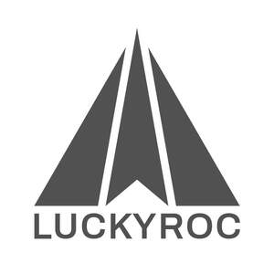

Trade Mark Journal No.2025/026 27 June 2025
UK00004220158 17 June 2025 (7,9,12)

- Class 7
- Fuel filters; Oil filters; Air filters for engines; Fuel pumps; Air compressors for vehicles; Water pumps for use in motors and engines; Radiators for motors and engines; Starter motors; Fans for motors and engines; Alternators; Turbochargers; Hydraulic pumps; Hydraulic actuators; Hydraulic valves; Hoses (Non-metallic -) for use in hydraulic systems in machines; Bearings; Electric ignition coils; Spark plugs; Injectors; Industrial robots.
- Class 9
- Electric plugs; Electric cables and wires; Electric switches; Batteries; Battery chargers; Charging appliances for rechargeable equipment; Solar panels for the production of electricity; Electric sockets; Electrical and electronic connectors; Electronic meters; Warning lights [beacons]; Sensors; Circuit boards; Computer e-commerce software to allow users to perform electronic business transactions via a global computer network; Protective helmets; Protective glasses; Dust protective masks; Safety gloves for protection against accident or injury; Protective footwear for the prevention of accident or injury; Clothing for protection against accidents, irradiation and fire.
- Class 12
- Caps for vehicle fuel tanks; Electric motors for land vehicles; Brake systems for vehicles; Axle bearings for land vehicles; Steering units for land vehicles; Suspension systems for land vehicles; Steering wheels; Wheels; Wheel hubs; Lug nuts for vehicle wheels; Brake pads for vehicles; Brake cylinders; Bodies for vehicles; Horns for vehicles; Seats for vehicles; Rearview mirrors; Mud guards [land vehicle parts]; Vehicle joysticks; Forklift trucks.
Xiamen Luckyroc Industry Co., Ltd.
Representative: IPP Master Limited